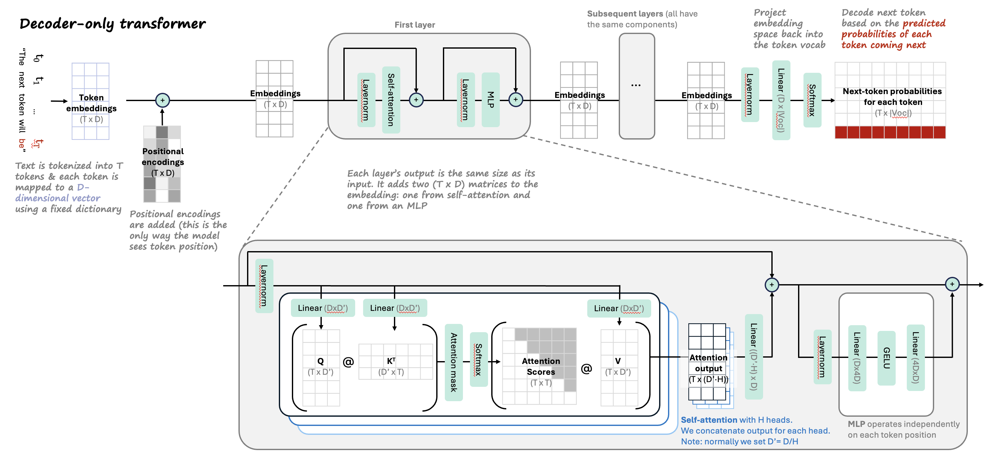
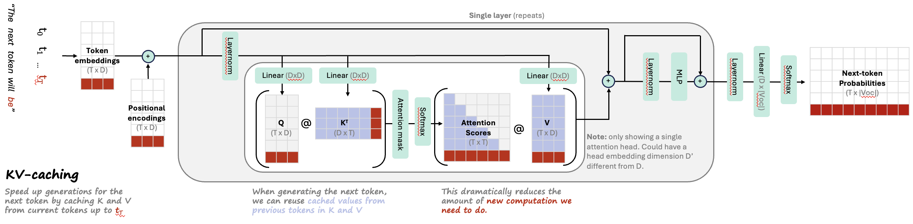
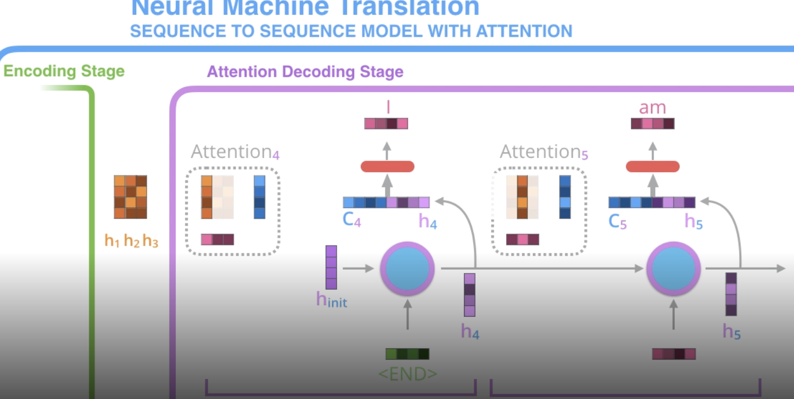

1.7. llms#
See related papers in the 📌 interpretability page.
1.7.1. basics#


attention = vector of importance weights
to predict or infer one element, such as a pixel in an image or a word in a sentence, we estimate using the attention vector how strongly it is correlated with (or “attends to” other elements and take the sum of their values weighted by the attention vector as the approximation of the target
vanilla transformer: multihead attention, add + norm, position-wise ffn, add + norm
self-attention layer implementation, mathematics, and chandan’s self-attention cheat-sheet
1.7.2. historically influential transformer-based model#
nlp (see also this link)
early papers
attention is all you need (vaswani et al. 2017) - initial transformer
encoder-decoder transformer for seq-to-seq (most new models don’t have special encoder-decoder structure for translation)
Semi-supervised Sequence Learning (dai & quoc le, 2015) - context vector is weighted sum of context vector at each word
ULMFiT (howard & ruder, 2018)
BERT (devlin et al. 2018) - semi-supervised learning (predict masked word - this is bidirectional) + supervised finetuning
RoBERTa (liu et al. 2019)
BART (lewis et al. 2019) - generalizes BERT with sequence-to-squence training: train by (1) corrupting text then (2) reconstruct the original text
ELMo (peters…zettlemoyer, 2018) - no word embeddings - train embeddings w/ bidirectional lstm (on language modeling)
XLNet (yang…quoc le, 2020)
GPT-4 (openai, 2023) - adds multimodal understanding + boosts context length to 32k
GPT-4o - adds more multimodality for input/output
GPT-3 (brown et al. 2020) - identical to GPT-2 except larger and replaces dense attention with sparse attention
sizes: largest has 175B params, 96 layers, 96 heads in each layer, head with dim 128, vocab size ~50k
InstructGPT (ouyang…lowe, 2022)
GPT-2 (radford et al. 2018)
GPT (radford et al. 2018)
Gopher (deepmind, 2021) - basically gpt-3 with slight mods (replace layernorm by RMSnorm, different positional embeddings)
open-source (from meta ai): LlaMa 2, LLaMa, OPT-IML, OPT
GPT4All (LLaMA 7B finetuned on code/stories/dialogue)
ELECTRA: Pre-training Text Encoders as Discriminators Rather Than Generators (clark…quoc le, chris manning, 2020) - more efficient: rather than standard masked training, use generator-discriminator setup for “token detection”
generator replaces many masked tokens with plausible samples - train with MLM
discriminator tries to guess which tokens were the masked ones - this is the main model that gets used
LongNet: Scaling Transformers to 1,000,000,000 Tokens (ding, …, wei, 2023) - multiscale attention similar to wavelets
Longformer: The Long-Document Transformer (Beltagy, Peters, & Cohan 2020) - processes very long contexts
PaLM: Scaling Language Modeling with Pathways (Google 2022) - 540 Billion params
pathways hardware center allows for fast/efficient training
discontinuous improvements - at some point large model improves
Chinchilla: Training Compute-Optimal LLMs (DeepMind 2022)
“chinchilla scaling laws” - for compute-optimal training, the model size and the number of training tokens should be scaled equally
T0 (sanh…rush, 2022) - multitask training enables better zero-shot generalization
T5 (raffel…liu, 2020) – text-to-text transfer transformer
UL2: Unifying Language Learning Paradigms (tay…metzler, 2022) - open-source 20B model, beats GPT-3 at zero-shot
early instruction following
FLAN-PaLM: Scaling Instruction-Finetuned Language Models (chung, …, quoc le, jason wei, 2022) - finetune with datasets phrased as instructions
FLAN (wei, …, le, 2021) - finetune on instructions to follows instructions
subquadratic attention
MAMBA (gu & dao, 2023) - state-space model
reasoning models
O1, O3, Deepseek-R1, …
smaller newer models
phi-1, phi-2
mistral 7B, mixtral MoE
clinical
ClinicalGPT: LLMs Finetuned with Diverse Medical Data and Comprehensive Evaluation (wang, …, li, 2023)
BioGPT (luo…poon, liu, 2022)
ChatDoctor (finetuned LLAMA) (yunxiang, …, you, 2023)
PubMedGPT (2.7B): (bolton, hall, …, manning, liang, 2022) -> renamed to BioMedLM
BioBERT: A pre-trained biomedical language representation model for biomedical text mining (2019)
PubMedBERT: Domain-Specific Language Model Pretraining for Biomedical Natural Language Processing (gu…gao, poon, 2021)
Med-PaLM 2 (google, 2023) - state of the art QA
LLMs Encode Clinical Knowledge (singhal, …, natarajan, 2022, google/deepmind) - introduce MultiMedQA dataset + derive Med-PaLM, a prompt-tuned version of PaLM
PMC-LLaMA (wu et al. 2023)
paper parsing
Nougat: Neural Optical Understanding for Academic Documents (blecher…scialom, sojnic, 2023)
PDFTriage: Question Answering over Long, Structured Documents (adobe, 2023)
information extraction / named entity recognition
Some popular models: bert-base-NER, medical-NER
two most frequent categories of IE targets are entity and relation, which structure many IE tasks, such as named entity recognition (Sang and Meulder, 2003), relation extraction (Carreras and Màrquez, 2004), event extraction (Walker et al., 2006), and others
Universal NER has a good dataset for a wide variety of attribute labels (https://universal-ner.github.io/), could just finetune something here [they finetune a 7B model to answer one question at a time]
Outperforms previous best model InstructUIE (2023)
Cuckoo: An IE Free Rider Hatched by Massive Nutrition in LLM’s Nest (peng, wang, yao, & shang, 2025)
use repeated text as label
filter repeated text to only include non-overlapping noun phrases from spacy
BIO tags mark each token with beginning (B), inside (I), and outside (O) tagging schemes
other
text-vision models
CLIP (radford et al. 2021) - jointly train text/images
batch-based loss: encodings from same image/text pair should be close while encodings across different examples in the batch should be different
note: empirically works better with very large batch size
DALL-E 2 (OpenAI, 2022)
clip is foundation as generative model
generates text + image embeddings
“prior network” maps text embedding to image embedding
adds diffusion model
Stable diffusion (stability.ai, 2022) - open-source recreation, now highly optimized for speed
Imagen (google, 2022)
BLIP-2 (salesforce, 2023) - Bootstrapping Language-Image Pre-training with Frozen Image Encoders and LLMs
video
Text-To-4D Dynamic Scene Generation (meta, 2023)
vision (rather than words, people generally use image patches as tokens)
VIT: An Image is Worth 16x16 Words: Transformers for Image Recognition at Scale (dosoviskiy, …, houlsby, 2020)
attention augmentation to resnet for vision (bello…quoc le, 2020)
DINOv2 (FAIR, 2022)
DINO: Emerging Properties in Self-Supervised Vision Transformers (FAIR, 2021)
SAM 2 (FAIR, 2024) - strong segmentation model (handles 2D images or 2D images + time)
SAM 1 (FAIR, 2023) - segmentation for 2D images
Masked Autoencoders Are Scalable Vision Learners (he…dollar, girshick, 2021) - BERT-style training
speed up by not applying encoder to mask tokens + adding mask to a lot of the data (like 75%)
really good results without much data
spatial transformers networks (deepmind, 2015)
reinforcement learning (RL)
AdA: Human-Timescale Adaptation in an Open-Ended Task Space (deepmind, 2023)
GATO: A Generalist Agent (deepmind, 2022) - single agent plays many different video games
different modalities are converted to tokens differently (e.g. image patches are fed through resnet)
In-context Reinforcement Learning with Algorithm Distillation (laskin, wang, …, sahni, satinder singh, mnih, 2022, deepmind) - learn to improve an RL algorithm
put history of (observation, action, reward) sequences into context and then use them to predict new action given new observation
Decision Transformer: Reinforcement Learning via Sequence Modeling (chen, lu, …abbeel, srinivas, mordatch, 2021) - transformer that predicts what the next highest reward step is instead of the next word
agents
AutoGen: Enabling Next-Gen LLM Applications via Multi-Agent Conversation (wu, bansal, …, wang, 2024)
dialog
ChatGPT
GODEL: Large-Scale Pre-Training for Goal-Directed Dialog (baolin peng, galley, …, gao , 2022) - add grounded pre-training
Deal or No Deal? End-to-End Learning for Negotiation Dialogues (lewis…batra, 2017, Meta ) - controversial paper where agents “make up their own language” (this is pre-transformers)
MINERVA: Solving Quantitative Reasoning Problems with Language Models (google, 2022) - train on well-parsed, domain-specific data (math arxiv) to solve math-reasoning problems
autoformalization (wu…, szegedy, 2022) - translating from natural language math to formal language
produce sql/python that then finds an answer (cheng…zettlemoyer, smith, yu, 2022)
CODEX: Evaluating LLMs Trained on Code (2021, openai)
Repair Is Nearly Generation: Multilingual Program Repair with LLMs (Joshi et al. 2022)
Improving automatically generated code from Codex via Automated Program Repair (Fan et al. 2022) - use automated program repair to tweak codex outputs to make them better
Generating Question Titles for Stack Overflow from Mined Code Snippets (Gao et al. 2020)
Automatic Program Repair with OpenAI’s Codex: Evaluating QuixBugs (Prenner & Robbes, 2021)
use prompt like:
#### fix the bug in the following function <buggy function and/or docstring here> #### fixed function
program synthesis arxiv.org/abs/2108.07732 - formalize natural language into runnable code
science
Galactica: A LLM for Science (taylor…, stojnic, 2022, meta ai) - trained on mostly papers + some knowledge bases (e.g. proteins)
Nougat: Neural Optical Understanding for Academic Documents (blecher…scialom, sojnic, 2023)
audio
MusicLM: Generating Music From Text (google, 2023)
Jukebox: A Generative Model for Music (openai, 2020)
Voicebox: Text-Guided Multilingual Universal Speech Generation at Scale (meta, 2023) - text-to-speech
summarization / keywords
KeyBERT: Minimal keyword extraction with BERT ([grootendorst, 2020]
1.7.3. ngram-based models#
Infini-gram: Scaling Unbounded n-gram Language Models to a Trillion Tokens (liu, min, zettlemoyer, choic, & hajishirzi, 2024)
motivation: hard to scale ngram models to large datasets and large data lengths
soln 1: backoff (Jurafsky & Martin, 2000) - select n based on the longest suffix of the prompt that has a non-zero count in the corpus
counts of the next token yield the prob. of the next token
Katz backoff (Katz, 1987) discounts probs to yield valid prob. distr.
soln 2: represent prob. table in suffix array to make things very fast
suffix array stores address to each location in the training data alphabetically sorted
roughly the same size
this makes it fast to search for instances of an ngram (and also for what precedes/follows it)
results show that infinigram can considerably improve perplexities when it is linearly combined with the logits from LLMs (experiments up to llama-2 70B)
Interpretable Language Modeling via Induction-head Ngram Models (kim, mantena, …, gao, 2024) - extend infinigram with fuzzy-matching induction heads to improve adaptation
Transformers Can Represent n-gram Language Models (svete & cotterell, 2024) - transformers have the computational capacity to represent ngram models
Generalization through Memorization: Nearest Neighbor Language Models (khandelwal, levy, jurafsky, zettlemoyer, & lewis, 2020) - average over output of neighboring embeddings
smoothing ngram models (chen & goodman, 1996)
interpolation - e.g. linearly combine pobabilities shorter ngram sequences with larger ngram sequences (places better prior on ngrams that were not seen)
see also latent LM for smoothing
Improving N-gram Language Models with Pre-trained Deep Transformer(wang et al. 2019 ) - use transformer to generate synthetic data for new n-gram model (language model, doesn’t extend to classification)
Improvements to N-gram Language Model Using Text Generated from Neural Language Model (suzuki et al. 2019) - generate synthetic data from RNNs for new n-gram model
classifierss
Aug-imodels: Augmenting Interpretable Models with LLMs during Training (singh, askari, caruana, & gao, 2023) - build fully transparent n-gram based classifiers (linear or tree) by distilling info from LLMs
fasttext (jin et al. 2016)
Neural Bag-of-Ngrams (li et al. 2017) - learn embedding vectors for ngrams via deep version of skip-gram
1.7.4. mathematical overview of transformers#
based on Formal Algorithms for Transformers
tasks
sequence modeling: learn \(p(x)\), usually factorized as \(p(x_i|x_1,...,x_{i-1})\)
sequence-to-sequence: learn \(p(z|x)\), e.g. transalation, speech-to-text, question answering
preprocessing
embedding matrix takes in one-hot tokens and linearly maps them to a vector
positional embedding of a token is usually added to the token embedding to form a token’s initial embedding
attention types
Bidirectional / unmasked self-attention - primary/context vectors are the same
Unidirectional / masked self-attention - mask scores from before a given word
Cross-attention - primary/context vectors can come from different places
non-attention
layernorm: controls mean/variance of activations
RMSnorm: simpler version, sets mean/offset to zero
unembedding
linear layer (with softmax) that outputs size of original vocab
sometimes fixed to be transpose of the embedding matrix
predictions
predict next word using single linear layer on hidden state from previous word
finetune classification head often only using linear layer on first token from sequence
architectures
initially, encoder-decoder was common, but now often no decoder
1.7.5. visual explanation of self-attention#
based on article by jay allamar
**self-attention ** - layer that lets word learn its relation to other layers
for each word, want score telling how much importance to place on each other word (queries \(\cdot\) keys)
we get an encoding for each word
the encoding of each word returns a weighted sum of the values of the words (the current word gets the highest weight)
softmax this and use it to do weighted sum of values

(optional) implementation details
multi-headed attention - just like having many filters, get many encodings for each word
each one can take input as the embedding from the previous attention layer
position vector - add this into the embedding of each word (so words know how far apart they are) - usually use sin/cos rather than actual position number
padding mask - add zeros to the end of the sequence
look-ahead mask - might want to mask to only use previous words (e.g. if our final task is decoding)
residual + normalize - after self-attention layer, often have residual connection to previous input, which gets added then normalized
decoder - each word only allowed to attend to previous positions
3 components
queries
keys
values
attention
encoder reads input and ouputs context vector after each word
decoder at each step uses a different weighted combination of these context vectors
specifically, at each step, decoder concatenates its hidden state w/ the attention vector (the weighted combination of the context vectors)
this is fed to a feedforward net to output a word

at a high level we have \(Q, K, V\) and compute \(\text{softmax}(QK^T)V\)
instead could simplify it and do \(\text{softmax}(XX^T)V\) - this would then be based on kernel
transformer
uses many self-attention layers
many stacked layers in encoder + decoder (not rnn: self-attention + feed forward)
details
initial encoding: each word -> vector
each layer takes a list of fixed size (hyperparameter e.g. length of longest sentence) and outputs a list of that same fixed size (so one output for each word)
can easily train with a masked word to predict the word at the predicted position in the encoding
multi-headed attention has several of each of these (then just concat them)
1.7.5.1. huggingface tutorial#
Broadly, models can be grouped into three categories:
GPT-like (also called auto-regressive Transformer models)
BERT-like (also called auto-encoding Transformer models)
BART/T5-like (also called sequence-to-sequence Transformer models)
Handling multiple sequences - Hugging Face Course
pad sequences to have the same length (need to modify attention masks to ignore the padded values)
1.7.5.2. pre-transformer nlp models#
rnns
when training rnn, accumulate gradients over sequence and then update all at once
stacked rnns have outputs of rnns feed into another rnn
bidirectional rnn - one rnn left to right and another right to left (can concatenate, add, etc.)
standard seq2seq
encoder reads input and outputs context vector (the hidden state)
decoder (rnn) takes this context vector and generates a sequencefagoa